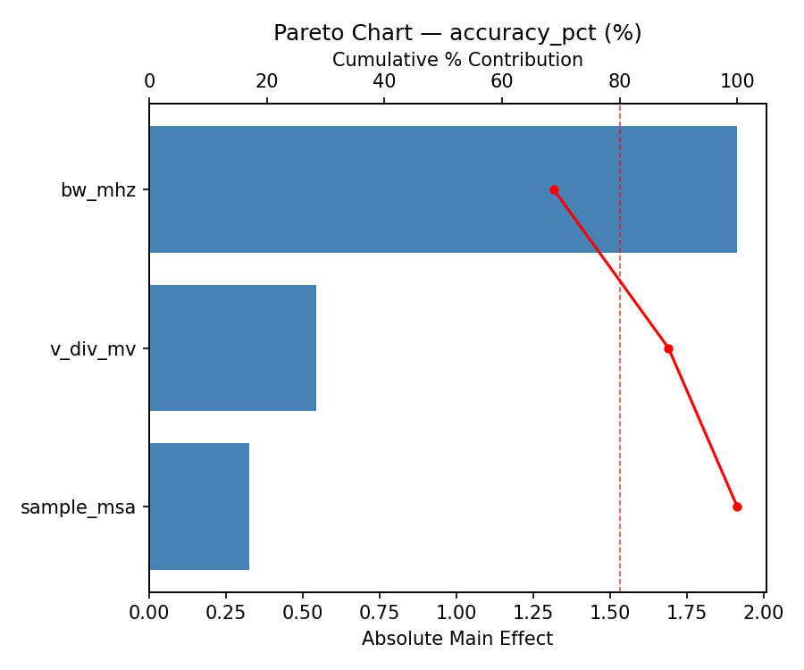
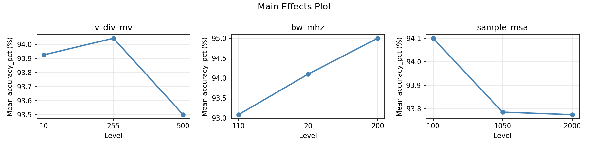
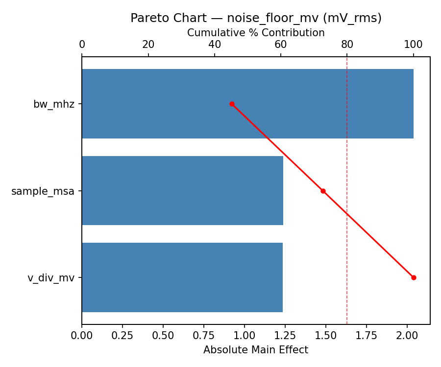
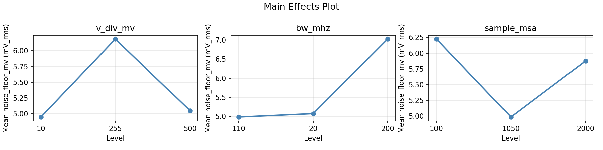
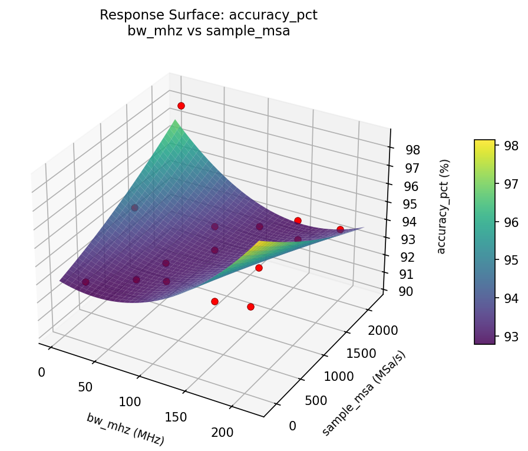
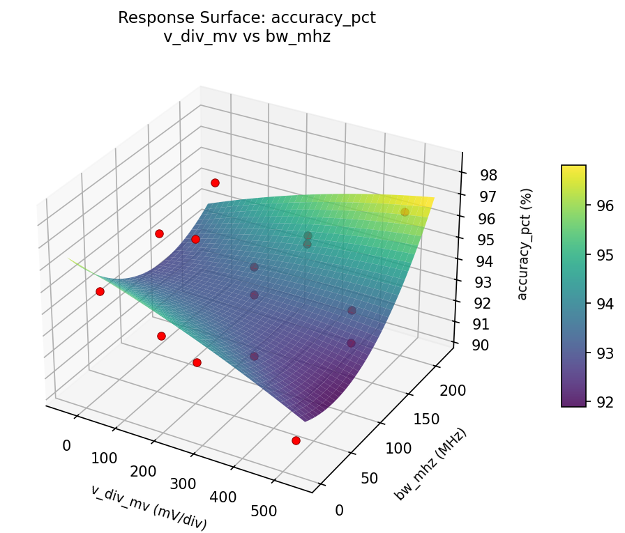
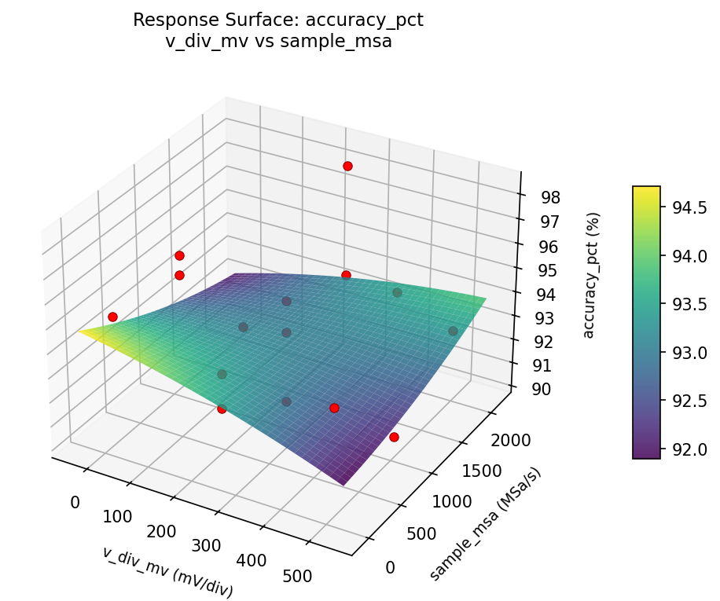
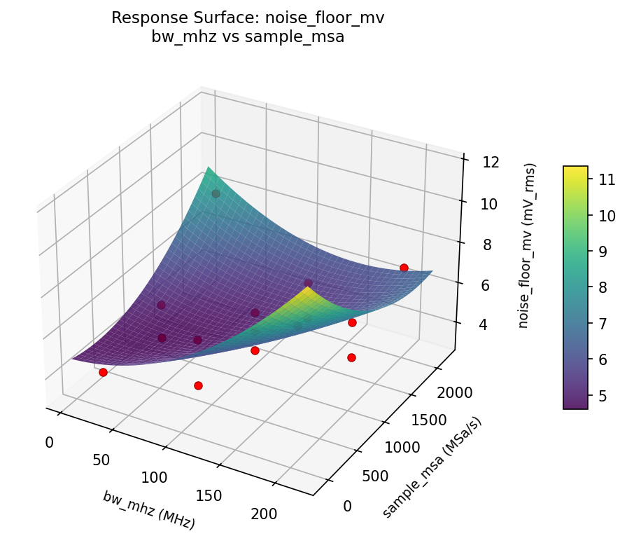
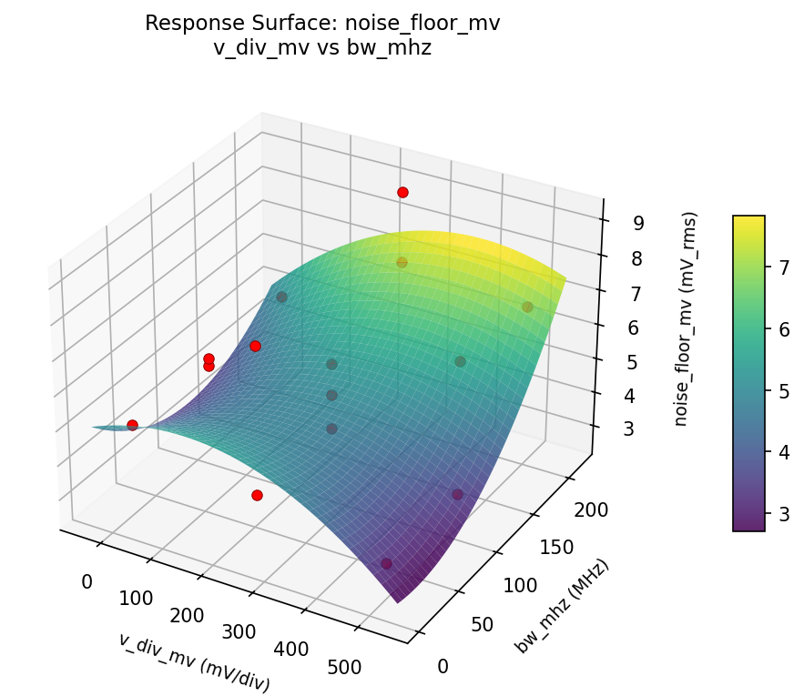
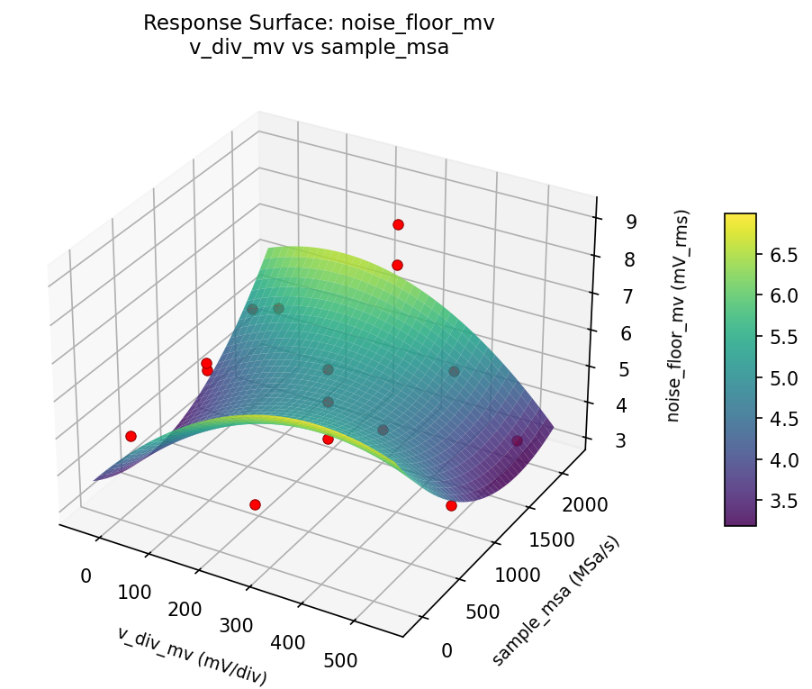

Summary
This experiment investigates oscilloscope measurement setup. Box-Behnken design to maximize measurement accuracy and minimize noise floor by tuning vertical scale, bandwidth limit, and sample rate.
The design varies 3 factors: v div mv (mV/div), ranging from 10 to 500, bw mhz (MHz), ranging from 20 to 200, and sample msa (MSa/s), ranging from 100 to 2000. The goal is to optimize 2 responses: accuracy pct (%) (maximize) and noise floor mv (mV_rms) (minimize). Fixed conditions held constant across all runs include probe = 10x, coupling = DC.
A Box-Behnken design was chosen because it efficiently fits quadratic models with 3 continuous factors while avoiding extreme corner combinations — requiring only 15 runs instead of the 8 needed for a full factorial at two levels.
Quadratic response surface models were fitted to capture potential curvature and factor interactions. The RSM contour plots below visualize how pairs of factors jointly affect each response.
Key Findings
For accuracy pct, the most influential factors were v div mv (47.1%), sample msa (37.9%), bw mhz (15.0%). The best observed value was 98.3 (at v div mv = 255, bw mhz = 110, sample msa = 1050).
For noise floor mv, the most influential factors were sample msa (36.5%), v div mv (32.3%), bw mhz (31.1%). The best observed value was 3.2 (at v div mv = 255, bw mhz = 200, sample msa = 2000).
Recommended Next Steps
- Run confirmation experiments at the predicted optimal settings to validate the model.
- Consider whether any fixed factors should be varied in a future study.
Experimental Setup
Factors
| Factor | Low | High | Unit |
|---|
v_div_mv | 10 | 500 | mV/div |
bw_mhz | 20 | 200 | MHz |
sample_msa | 100 | 2000 | MSa/s |
Fixed: probe = 10x, coupling = DC
Responses
| Response | Direction | Unit |
|---|
accuracy_pct | ↑ maximize | % |
noise_floor_mv | ↓ minimize | mV_rms |
Configuration
{
"metadata": {
"name": "Oscilloscope Measurement Setup",
"description": "Box-Behnken design to maximize measurement accuracy and minimize noise floor by tuning vertical scale, bandwidth limit, and sample rate"
},
"factors": [
{
"name": "v_div_mv",
"levels": [
"10",
"500"
],
"type": "continuous",
"unit": "mV/div"
},
{
"name": "bw_mhz",
"levels": [
"20",
"200"
],
"type": "continuous",
"unit": "MHz"
},
{
"name": "sample_msa",
"levels": [
"100",
"2000"
],
"type": "continuous",
"unit": "MSa/s"
}
],
"fixed_factors": {
"probe": "10x",
"coupling": "DC"
},
"responses": [
{
"name": "accuracy_pct",
"optimize": "maximize",
"unit": "%"
},
{
"name": "noise_floor_mv",
"optimize": "minimize",
"unit": "mV_rms"
}
],
"settings": {
"operation": "box_behnken",
"test_script": "use_cases/279_oscilloscope_measurement/sim.sh"
}
}
Experimental Matrix
The Box-Behnken Design produces 15 runs. Each row is one experiment with specific factor settings.
| Run | v_div_mv | bw_mhz | sample_msa |
|---|
| 1 | 255 | 20 | 100 |
| 2 | 255 | 110 | 1050 |
| 3 | 500 | 110 | 2000 |
| 4 | 500 | 110 | 100 |
| 5 | 255 | 110 | 1050 |
| 6 | 255 | 110 | 1050 |
| 7 | 10 | 110 | 2000 |
| 8 | 500 | 20 | 1050 |
| 9 | 255 | 20 | 2000 |
| 10 | 500 | 200 | 1050 |
| 11 | 10 | 110 | 100 |
| 12 | 255 | 200 | 2000 |
| 13 | 10 | 20 | 1050 |
| 14 | 10 | 200 | 1050 |
| 15 | 255 | 200 | 100 |
Step-by-Step Workflow
1
Preview the design
$ python doe.py info --config use_cases/279_oscilloscope_measurement/config.json
2
Generate the runner script
$ python doe.py generate --config use_cases/279_oscilloscope_measurement/config.json \
--output use_cases/279_oscilloscope_measurement/results/run.sh --seed 42
3
Execute the experiments
$ bash use_cases/279_oscilloscope_measurement/results/run.sh
4
Analyze results
$ python doe.py analyze --config use_cases/279_oscilloscope_measurement/config.json
5
Get optimization recommendations
$ python doe.py optimize --config use_cases/279_oscilloscope_measurement/config.json
6
Multi-objective optimization
With 2 competing responses, use --multi to find the best compromise via Derringer–Suich desirability.
$ python doe.py optimize --config use_cases/279_oscilloscope_measurement/config.json --multi
7
Generate the HTML report
$ python doe.py report --config use_cases/279_oscilloscope_measurement/config.json \
--output use_cases/279_oscilloscope_measurement/results/report.html
Features Exercised
| Feature | Value |
|---|
| Design type | box_behnken |
| Factor types | continuous (all 3) |
| Arg style | double-dash |
| Responses | 2 (accuracy_pct ↑, noise_floor_mv ↓) |
| Total runs | 15 |
Analysis Results
Generated from actual experiment runs using the DOE Helper Tool.
Response: accuracy_pct
Top factors: v_div_mv (47.1%), sample_msa (37.9%), bw_mhz (15.0%).
Pareto Chart

Main Effects Plot

Response: noise_floor_mv
Top factors: sample_msa (36.5%), v_div_mv (32.3%), bw_mhz (31.1%).
Pareto Chart

Main Effects Plot

Response Surface Plots
3D surfaces fitted with quadratic RSM. Red dots are observed data points.
accuracy pct bw mhz vs sample msa

accuracy pct v div mv vs bw mhz

accuracy pct v div mv vs sample msa

noise floor mv bw mhz vs sample msa

noise floor mv v div mv vs bw mhz

noise floor mv v div mv vs sample msa

Multi-Objective Optimization
When responses compete, Derringer–Suich desirability finds the best compromise.
Each response is scaled to a 0–1 desirability, then combined via a weighted geometric mean.
Overall Desirability
D = 0.6628
Per-Response Desirability
| Response | Weight | Desirability | Predicted | Dir |
|---|
accuracy_pct |
1.5 |
|
95.12 0.5928 95.12 % |
↑ |
noise_floor_mv |
1.0 |
|
4.31 0.7837 4.31 mV_rms |
↓ |
Recommended Settings
| Factor | Value |
|---|
v_div_mv | 59 mV/div |
bw_mhz | 20 MHz |
sample_msa | 860 MSa/s |
Source: from RSM model prediction
Trade-off Summary
Sacrifice = how much worse than single-objective best.
| Response | Predicted | Best Observed | Sacrifice |
|---|
noise_floor_mv | 4.31 | 3.20 | +1.11 |
Top 3 Runs by Desirability
| Run | D | Factor Settings |
|---|
| #5 | 0.6425 | v_div_mv=10, bw_mhz=200, sample_msa=1050 |
| #2 | 0.6095 | v_div_mv=255, bw_mhz=20, sample_msa=100 |
Model Quality
| Response | R² | Type |
|---|
noise_floor_mv | 0.8568 | quadratic |
Full Multi-Objective Output
============================================================
MULTI-OBJECTIVE OPTIMIZATION
Method: Derringer-Suich Desirability Function
============================================================
Overall desirability: D = 0.6628
Response Weight Desirability Predicted Direction
---------------------------------------------------------------------
accuracy_pct 1.5 0.5928 95.12 % ↑
noise_floor_mv 1.0 0.7837 4.31 mV_rms ↓
Recommended settings:
v_div_mv = 59 mV/div
bw_mhz = 20 MHz
sample_msa = 860 MSa/s
(from RSM model prediction)
Trade-off summary:
accuracy_pct: 95.12 (best observed: 98.30, sacrifice: +3.18)
noise_floor_mv: 4.31 (best observed: 3.20, sacrifice: +1.11)
Model quality:
accuracy_pct: R² = 0.1870 (linear)
noise_floor_mv: R² = 0.8568 (quadratic)
Top 3 observed runs by overall desirability:
1. Run #3 (D=0.6464): v_div_mv=255, bw_mhz=110, sample_msa=1050
2. Run #5 (D=0.6425): v_div_mv=10, bw_mhz=200, sample_msa=1050
3. Run #2 (D=0.6095): v_div_mv=255, bw_mhz=20, sample_msa=100
Full Analysis Output
=== Main Effects: accuracy_pct ===
Factor Effect Std Error % Contribution
--------------------------------------------------------------
v_div_mv 2.9036 0.5733 47.1%
sample_msa 2.3393 0.5733 37.9%
bw_mhz 0.9250 0.5733 15.0%
=== ANOVA Table: accuracy_pct ===
Source DF SS MS F p-value
-----------------------------------------------------------------------------
v_div_mv 2 23.8240 11.9120 48.954 0.0000
bw_mhz 2 2.3783 1.1892 4.887 0.0410
sample_msa 2 13.9298 6.9649 28.623 0.0002
Lack of Fit 6 28.3945 4.7324 19.448 0.0497
Pure Error 2 0.4867 0.2433
Error 8 28.8812 0.2433
Total 14 69.0133 4.9295
=== Summary Statistics: accuracy_pct ===
v_div_mv:
Level N Mean Std Min Max
------------------------------------------------------------
10 4 94.5250 3.1160 90.7000 98.3000
255 7 92.5714 1.5457 90.3000 94.2000
500 4 95.4750 0.7588 94.7000 96.5000
bw_mhz:
Level N Mean Std Min Max
------------------------------------------------------------
110 7 93.6000 1.8184 90.7000 96.5000
20 4 94.5250 0.6397 93.8000 95.2000
200 4 93.6750 3.8973 90.3000 98.3000
sample_msa:
Level N Mean Std Min Max
------------------------------------------------------------
100 4 92.3750 2.2021 90.3000 94.7000
1050 7 94.7143 1.9454 92.7000 98.3000
2000 4 93.8750 2.4377 90.6000 96.5000
=== Main Effects: noise_floor_mv ===
Factor Effect Std Error % Contribution
--------------------------------------------------------------
sample_msa 1.6250 0.4549 36.5%
v_div_mv 1.4393 0.4549 32.3%
bw_mhz 1.3857 0.4549 31.1%
=== ANOVA Table: noise_floor_mv ===
Source DF SS MS F p-value
-----------------------------------------------------------------------------
v_div_mv 2 5.4013 2.7006 12.659 0.0033
bw_mhz 2 5.0613 2.5306 11.862 0.0040
sample_msa 2 6.8823 3.4412 16.130 0.0016
Lack of Fit 6 25.6858 4.2810 20.067 0.0482
Pure Error 2 0.4267 0.2133
Error 8 26.1125 0.2133
Total 14 43.4573 3.1041
=== Summary Statistics: noise_floor_mv ===
v_div_mv:
Level N Mean Std Min Max
------------------------------------------------------------
10 4 6.5250 1.3841 5.0000 8.2000
255 7 5.0857 2.2229 3.2000 9.1000
500 4 5.4000 0.9416 4.8000 6.8000
bw_mhz:
Level N Mean Std Min Max
------------------------------------------------------------
110 7 5.1143 1.4837 3.2000 7.0000
20 4 6.5000 2.0216 4.8000 9.1000
200 4 5.3750 2.0759 3.2000 8.2000
sample_msa:
Level N Mean Std Min Max
------------------------------------------------------------
100 4 5.7250 1.0210 4.9000 7.1000
1050 7 4.9000 1.6052 3.2000 8.2000
2000 4 6.5250 2.4486 3.2000 9.1000
Optimization Recommendations
=== Optimization: accuracy_pct ===
Direction: maximize
Best observed run: #12
v_div_mv = 255
bw_mhz = 110
sample_msa = 1050
Value: 98.3
RSM Model (linear, R² = 0.1427, Adj R² = -0.0911):
Coefficients:
intercept +93.8667
v_div_mv -1.0250
bw_mhz +0.2000
sample_msa -0.3750
RSM Model (quadratic, R² = 0.6836, Adj R² = 0.1140):
Coefficients:
intercept +96.0667
v_div_mv -1.0250
bw_mhz +0.2000
sample_msa -0.3750
v_div_mv*bw_mhz -0.8500
v_div_mv*sample_msa +0.6500
bw_mhz*sample_msa -1.1500
v_div_mv^2 -0.9083
bw_mhz^2 -2.6083
sample_msa^2 -0.6083
Curvature analysis:
bw_mhz coef=-2.6083 concave (has a maximum)
v_div_mv coef=-0.9083 concave (has a maximum)
sample_msa coef=-0.6083 concave (has a maximum)
Notable interactions:
bw_mhz*sample_msa coef=-1.1500 (antagonistic)
v_div_mv*bw_mhz coef=-0.8500 (antagonistic)
v_div_mv*sample_msa coef=+0.6500 (synergistic)
Predicted optimum (from quadratic model, at observed points):
v_div_mv = 10
bw_mhz = 110
sample_msa = 100
Predicted value: 96.6000
Surface optimum (via L-BFGS-B, quadratic model):
v_div_mv = 10
bw_mhz = 147.955
sample_msa = 100
Predicted value: 97.0639
Model quality: Moderate fit — use predictions directionally, not precisely.
Factor importance:
1. bw_mhz (effect: 2.7, contribution: 49.1%)
2. v_div_mv (effect: 2.0, contribution: 37.3%)
3. sample_msa (effect: 0.8, contribution: 13.6%)
=== Optimization: noise_floor_mv ===
Direction: minimize
Best observed run: #1
v_div_mv = 255
bw_mhz = 200
sample_msa = 2000
Value: 3.2
RSM Model (linear, R² = 0.2487, Adj R² = 0.0438):
Coefficients:
intercept +5.5533
v_div_mv +0.7375
bw_mhz +0.4750
sample_msa -0.7625
RSM Model (quadratic, R² = 0.6484, Adj R² = 0.0155):
Coefficients:
intercept +5.9667
v_div_mv +0.7375
bw_mhz +0.4750
sample_msa -0.7625
v_div_mv*bw_mhz -0.6750
v_div_mv*sample_msa -0.7500
bw_mhz*sample_msa -1.7250
v_div_mv^2 -0.1333
bw_mhz^2 -0.6083
sample_msa^2 -0.0333
Curvature analysis:
bw_mhz coef=-0.6083 concave (has a maximum)
v_div_mv coef=-0.1333 concave (has a maximum)
sample_msa coef=-0.0333 negligible curvature
Notable interactions:
bw_mhz*sample_msa coef=-1.7250 (antagonistic)
v_div_mv*sample_msa coef=-0.7500 (antagonistic)
v_div_mv*bw_mhz coef=-0.6750 (antagonistic)
Predicted optimum (from linear model, at observed points):
v_div_mv = 500
bw_mhz = 110
sample_msa = 100
Predicted value: 7.0533
Surface optimum (via L-BFGS-B, linear model):
v_div_mv = 10
bw_mhz = 20
sample_msa = 2000
Predicted value: 3.5783
Model quality: Weak fit — consider adding center points or using a different design.
Factor importance:
1. sample_msa (effect: 1.5, contribution: 37.5%)
2. v_div_mv (effect: 1.5, contribution: 36.2%)
3. bw_mhz (effect: 1.1, contribution: 26.3%)